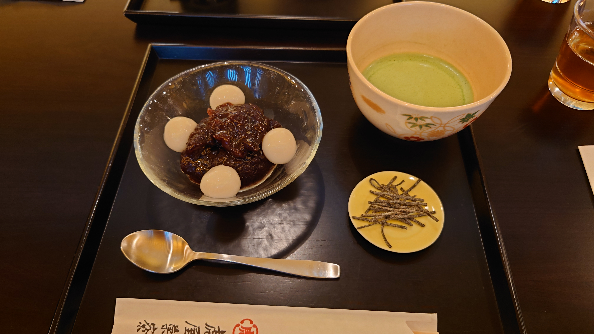
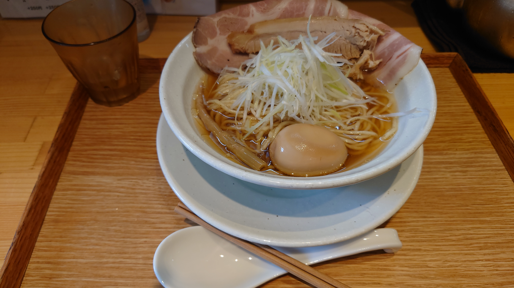
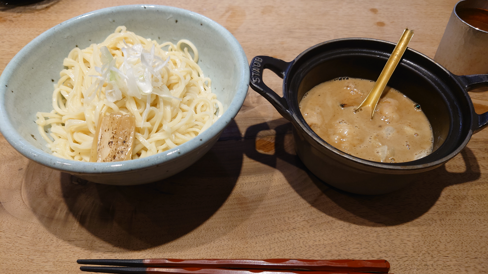
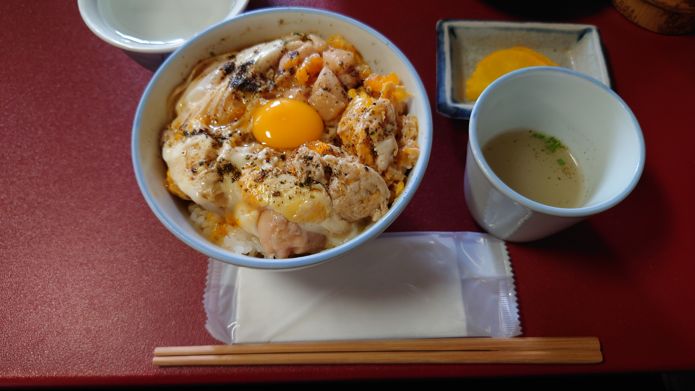
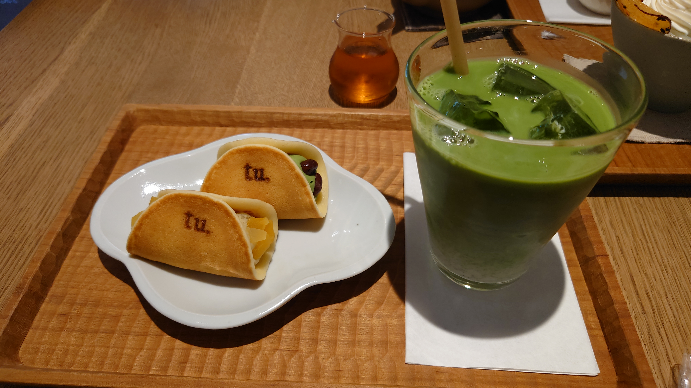
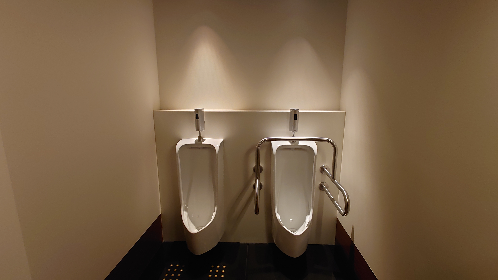

こんにちは、ザクザク食感です。
京都に行きました！
アーマードコア6のポップアップショップに行くのと京都に住んでいる友達に会うのが目的だったので、ポップアップショップに行くとき以外はずっと友達が知っている飲食店をめぐっていた

とらやの喫茶店に行った 本当の抹茶を始めて飲んだけどめちゃくちゃ美味しかった ぜんざいのあんこも甘さが全然くどくなくて次元が違った

優光っていうラーメン屋さんに行った 上京して初めて食べた家系ラーメンが衝撃的過ぎてこれを超えるラーメンはないと思っていたけど、このラーメンは同じベクトルで測れない美味しさがあった
貝だしのラーメンなんて食べたことなかったけどめっちゃ美味しかった

すがりっていうつけ麺屋さんに行った 牛モツが入ったつけ汁にゆずが練りこまれた麺のつけ麺で、めっちゃ美味しかった 魚介とモツの相性がよくてびっくりだった
でもお店がお屋敷みたいで看板もないし、店内も一方通行みたいな作りになってて怖かった 東京だとチェーン店以外に入ることはないので新鮮な経験だった

鳥岩桜っていう親子丼屋さんに行った メニューがなくて席に案内されたら親子丼が出て来るだけっていうお店で、そんなお店行ったことないから怖かったけど、この親子丼が信じられないくらい美味しくてびっくりした……
卵の白身と黄身が混ざってない（多分分けて入れてる？）のと山椒が入った黒七味がかかっていること以外は普通の親子丼なんだけど、素材の質が違ってめちゃくちゃ美味しい

鶴屋吉信の喫茶スペースに行った 生つばらっていうどら焼きみたいなお菓子がめちゃめちゃ美味しかった
はさんであるのが白あんっぽいけどあんこっぽい甘さはそんなにないし、皮もモチモチ食感でどら焼きっぽくなくて、イメージしてた味の斜め上を行っていてすごかった
あと焼肉とか駅弁とかも食べた
いわゆる観光は全くしなかったけど、直線の道と木製の建物ばっかりの異様な街並みを見ているだけで面白いしご飯がどれも美味しくて最高だった
あと人間が良かった 意外と外国人が少ないし、歩いている人たちの雰囲気が良かった
東京にいる人たちはみんな「全員死ね……！」みたいなオーラを発しながら歩いているけど、京都の人たちにはそれがなかったから気疲れしなかった
今回わかったことは、高いご飯はちゃんと美味しいということ あと東京は人が住む場所ではないということ
東京で有名なお店に行こうと思うと2時間待つとかザラだし高いしそんなに美味しくなかったりするし人が怖い！でもそれが普通だと思うように強制されつつあったかもしれない
でもそんなことはないです！！！お昼ご飯のお店が混みそうなら11時すぎくらいに行けばすんなりは入れるべきです！！！それくらいの人口密度の場所が人が住むのに適正なんだっていう感覚を取り戻しました
会社の自己紹介で「旅行が趣味です」って言ってる人が多いのが全然理解できてなかったけど、ちょっとわかった気がする…… いろんなところに行ってみたいですね
最後に、とらやのトイレが美しすぎるので貼っておきます

生け花かと思った
それでは、さようなら。